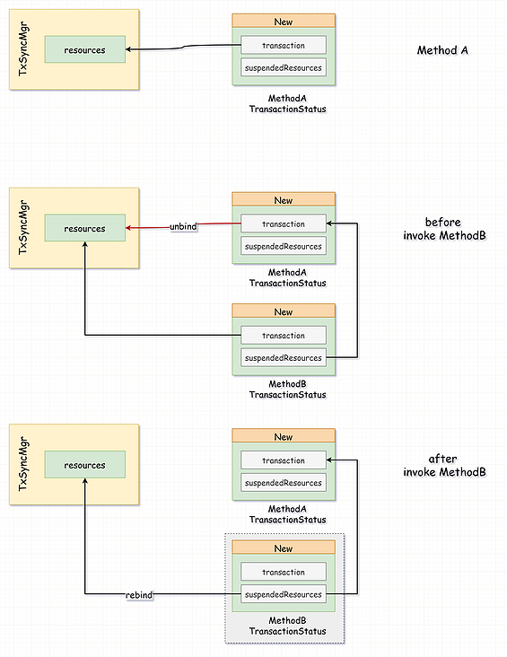
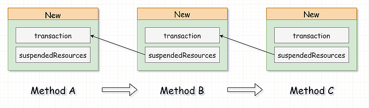
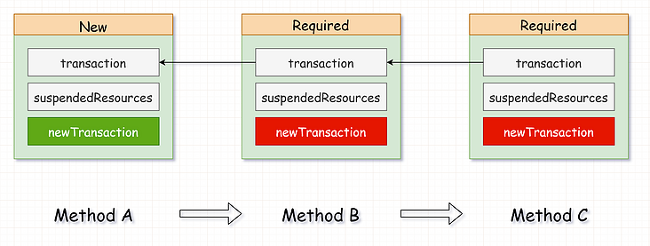
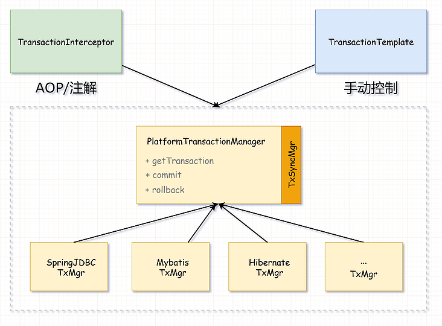

咱们从头到尾说一次 Spring 事务管理（器）
本文最后更新于：2022年11月29日 上午
事务管理，一个被说烂的也被看烂的话题，还是八股文中的基础股之一。但除了八股文中需要熟读并背诵的那些个传播行为之外，背后的“为什么”和核心原理更为重要。
写这篇文章之前，我也翻过一些事务管理器原理介绍文章，但大多都是生硬的翻译源码，一个劲的给源码加注释。这种源码翻译的文章虽说有帮助，但对读者来说体验并不好，很容易陷入代码的一些细节里，并不能帮助读者快速的了解事务管理的全貌，以及设计思路。
本文会从设计角度，一步步的剖析 Spring 事务管理的设计思路（都会设计事务管理器了，还能不不会用么？）
为什么需要事务管理？
先看看如果没有事务管理器的话，如果想让多个操作（方法/类）处在一个事务里应该怎么做：
// MethodA:
public void methodA(){
Connection connection = acquireConnection();
try{
int updated = connection.prepareStatement().executeUpdate();
methodB(connection);
connection.commit();
}catch (Exception e){
rollback(connection);
}finally {
releaseConnection(connection);
}
}
// MethodB:
public void methodB(Connection connection){
int updated = connection.prepareStatement().executeUpdate();
}
或者用 ThreadLocal 存储 Connection？
static ThreadLocal<Connection> connHolder = new ThreadLocal<>();
// MethodA:
public void methodA(){
Connection connection = acquireConnection();
connHolder.set(connection);
try{
int updated = connection.prepareStatement().executeUpdate();
methodB();
connection.commit();
}catch (Exception e){
rollback(connection);
}finally {
releaseConnection(connection);
connHolder.remove();
}
}
// MethodB:
public void methodB(){
Connection connection = connHolder.get();
int updated = connection.prepareStatement().executeUpdate();
}
还是有点恶心，再抽象一下？将绑定 Connection 的操作提取为公共方法：
static ThreadLocal<Connection> connHolder = new ThreadLocal<>();
private void bindConnection(){
Connection connection = acquireConnection();
connHolder.set(connection);
}
private void unbindConnection(){
releaseConnection(connection);
connHolder.remove();
}
// MethodA:
public void methodA(){
try{
bindConnection();
int updated = connection.prepareStatement().executeUpdate();
methoB();
connection.commit();
}catch (Exception e){
rollback(connection);
}finally {
unbindConnection();
}
}
// MethodB:
public void methodB(){
Connection connection = connHolder.get();
int updated = connection.prepareStatement().executeUpdate();
}
现在看起来好点了，不过我有一个新的需求：想让 methodB 独立一个新事务，单独提交和回滚，不影响 methodA
这……可就有点难搞了，ThreadLocal 中已经绑定了一个 Connection，再新事务的话就不好办了
那如果再复杂点呢，methodB 中需要调用 methodC，methodC 也需要一个独立事务……
而且，每次 bind/unbind 的操作也有点太傻了，万一哪个方法忘了写 unbind ，最后来一个连接泄露那不是完蛋了！
好在 Spring 提供了事务管理器，帮我们解决了这一系列痛点。
Spring 事务管理解决了什么问题？
Spring 提供的事务管理可以帮我们管理事务相关的资源，比如 JDBC 的 Connection、Hibernate 的 Session、Mybatis 的 SqlSession。如说上面的 Connection 绑定到 ThreadLocal 来解决共享一个事务的这种方式，Spring 事务管理就已经帮我们做好了。
还可以帮我们处理复杂场景下的嵌套事务，比如前面说到的 methodB/methodC 独立事务。
什么是嵌套事务？
还是拿上面的例子来说， methodA 中调用了 methodB，两个方法都有对数据库的操作，而且都需要事务：
// MethodA:
public void methodA(){
int updated = connection.prepareStatement().executeUpdate();
methodB();
// ...
}
// MethodB:
public void methodB(){
// ...
}
这种多个方法调用链中都有事务的场景，就是嵌套事务。不过要注意的是，并不是说多个方法使用一个事务才叫嵌套，哪怕是不同的事务，只要在这个方法的调用链中，都是嵌套事务。
什么是事务传播行为？
那调用链中的子方法，是用一个新事务，还是使用当前事务呢？这个子方法决定使用新事务还是当前事务（或不使用事务）的策略，就叫事务传播。
在 Spring 的事务管理中，这个子方法的事务处理策略叫做事务传播行为（Propogation Behavior）。
有哪些事务传播行为？
Spring 的事务管理支持多种传播行为
REQUIRED：支持当前事务，如果当前没有事务，就新建一个事务。这是最常见的选择。
SUPPORTS：支持当前事务，如果当前没有事务，就以非事务方式执行。
MANDATORY：支持当前事务，如果当前没有事务，就抛出异常。
REQUIRES_NEW：新建事务，如果当前存在事务，把当前事务挂起。
NOT_SUPPORTED：以非事务方式执行操作，如果当前存在事务，就把当前事务挂起。
NEVER：以非事务方式执行，如果当前存在事务，则抛出异常。
NESTED：支持当前事务，如果当前事务存在，则执行一个嵌套事务，如果当前没有事务，就新建一个事务。
但给这些传播行为分类之后，无非是以下三种：
- 优先使用当前事务
- 不使用当前事务，新建事务
- 不使用任何事务
比如上面的例子中，methodB/methodC 独立事务，就属于第 2 种传播行为 - 不使用当前事务，新建事务
看个栗子
以 Spring JDBC + Spring 注解版的事务举例。在默认的事务传播行为下，methodA 和 methodB 会使用同一个 Connection，在一个事务中
@Transactional
public void methodA(){
jdbcTemplate.batchUpdate(updateSql, params);
methodB();
}
@Transactional
public void methodB(){
jdbcTemplate.batchUpdate(updateSql, params);
}
如果我想让 methodB 不使用 methodA 的事务，自己新建一个连接/事务呢？只需要简单的配置一下 @Transactional 注解：
@Transactional
public void methodA(){
jdbcTemplate.batchUpdate(updateSql, params);
methodB();
}
// 传播行为配置为 - 方式2，不使用当前事务，独立一个新事务
@Transactional(propagation = Propagation.REQUIRES_NEW)
public void methodB(){
jdbcTemplate.batchUpdate(updateSql, params);
}
就是这么简单，获取 Connection/多方法共享 Connection/多方法共享+独享 Connection/提交/释放连接之类的操作，完全不需要我们操心，Spring 都替我们做好了。
怎么回滚？
在注解版的事务管理中，默认的的回滚策略是：抛出异常就回滚。这个默认策略挺好，连回滚都帮我们解决了，再也不用手动回滚。
但是如果在嵌套事务中，子方法独立新事务呢？这个时候哪怕抛出异常，也只能回滚子事务，不能直接影响前一个事务
可如果这个抛出的异常不是 sql 导致的，比如校验不通过或者其他的异常，此时应该将当前的事务回滚吗？
这个还真不一定，谁说抛异常就要回滚，异常也不回滚行不行？
当然可以！抛异常和回滚事务本来就是两个问题，可以连在一起，也可以分开处理
// 传播行为配置为 - 方式2，不使用当前事务，独立一个新事务
// 指定 Exception 也不会滚
@Transactional(propagation = Propagation.REQUIRES_NEW, noRollbackFor = Exception.class)
public void methodB(){
jdbcTemplate.batchUpdate(updateSql, params);
}
每个事务/连接使用不同配置
除了传播和回滚之外，还可以给每个事务/连接使用不同的配置，比如不同的隔离级别：
@Transactional
public void methodA(){
jdbcTemplate.batchUpdate(updateSql, params);
methodB();
}
// 传播行为配置为 - 方式2，不使用当前事务，独立一个新事务
// 这个事务/连接中使用 RC 隔离级别，而不是默认的 RR
@Transactional(propagation = Propagation.REQUIRES_NEW, isolation = Isolation.READ_UNCOMMITTED)
public void methodB(){
jdbcTemplate.batchUpdate(updateSql, params);
}
除了隔离级别之外，其他的 JDBC Connection 配置当然也是支持的，比如 readOnly。这样一来，虽然我们不用显示的获取 connection/session，但还是可以给嵌套中的每一个事务配置不同的参数，非常灵活。
功能总结
好了，现在已经了解了 Spring 事务管理的所有核心功能，来总结一下这些核心功能点：
- 连接/资源管理 - 无需手动获取资源、共享资源、释放资源
- 嵌套事务的支持 - 支持嵌套事务中使用不同的资源策略、回滚策略
- 每个事务/连接使用不同的配置
事务管理器（TransactionManager）模型
其实仔细想想，事务管理的核心操作只有两个：提交和回滚。前面所谓的传播、嵌套、回滚之类的，都是基于这两个操作。
所以 Spring 将事务管理的核心功能抽象为一个事务管理器（Transaction Manager），基于这个事务管理器核心，可以实现多种事务管理的方式。
这个核心的事务管理器只有三个功能接口：
获取事务资源，资源可以是任意的，比如jdbc connection/hibernate mybatis session之类，然后绑定并存储
提交事务 - 提交指定的事务资源
回滚事务 - 回滚指定的事务资源
interface PlatformTransactionManager{
// 获取事务资源，资源可以是任意的，比如jdbc connection/hibernate mybatis session之类 TransactionStatus getTransaction(TransactionDefinition definition) throws TransactionException; // 提交事务 void commit(TransactionStatus status) throws TransactionException; // 回滚事务 void rollback(TransactionStatus status) throws TransactionException;}
事务定义 - TransactionDefinition
还记得上面的 @Transactional 注解吗，里面定义了传播行为、隔离级别、回滚策略、只读之类的属性，这个就是一次事务操作的定义。
在获取事务资源时，需要根据这个事务的定义来进行不同的配置：
- 比如配置了使用新事务，那么在获取事务资源时就需要创建一个新的，而不是已有的
- 比如配置了隔离级别，那么在首次创建资源（Connection）时，就需要给 Connection 设置 propagation
- 比如配置了只读属性，那么在首次创建资源（Connection）时，就需要给 Connection 设置 readOnly
为什么要单独用一个 TransactionDefinition 来存储事务定义，直接用注解的属性不行吗？
当然可以，但注解的事务管理只是 Spring 提供的自动挡，还有适合老司机的手动挡事务管理（后面会介绍）；手动挡可用不了注解，所以单独建一个事务定义的模型，这样就可以实现通用。
事务状态 - TransactionStatus
那既然嵌套事务下，每个子方法的事务可能不同，所以还得有一个子方法事务的状态 - TransactionStatus，用来存储当前事务的一些数据和状态，比如事务资源（Connection）、回滚状态等。
获取事务资源
事务管理器的第一步，就是根据事务定义来获取/创建资源了，这一步最麻烦的是要区分传播行为，不同传播行为下的逻辑不太一样。
“默认的传播行为下，使用当前事务”，怎么算有当前事务呢？
把事务资源存起来嘛，只要已经存在那就是有当前事务，直接获取已存储的事务资源就行。文中开头的例子也演示了，如果想让多个方法无感的使用同一个事务，可以用 ThreadLocal 存储起来，简单粗暴。
Spring 也是这么做的，不过它实现的更复杂一些，抽象了一层事务资源同步管理器 - TransactionSynchronizationManager（本文后面会简称 TxSyncMgr），在这个同步管理器里使用 ThreadLocal 存储了事务资源（本文为了方便理解，尽可能的不贴非关键源码）。
剩下的就是根据不同传播行为，执行不同的策略了，分类之后只有 3 个条件分支：
当前有事务 - 根据不同传播行为处理不同
当前没事务，但需要开启新事务
彻底不用事务 - 这个很少用
public final TransactionStatus getTransaction(TransactionDefinition definition) {
//创建事务资源 - 比如 Connection Object transaction = doGetTransaction(); if (isExistingTransaction(transaction)) { // 处理当前已有事务的场景 return handleExistingTransaction(def, transaction, debugEnabled); }else if (def.getPropagationBehavior() == TransactionDefinition.PROPAGATION_REQUIRED || def.getPropagationBehavior() == TransactionDefinition.PROPAGATION_REQUIRES_NEW || def.getPropagationBehavior() == TransactionDefinition.PROPAGATION_NESTED){ // 开启新事务 return startTransaction(def, transaction, debugEnabled, suspendedResources); }else { // 彻底不用事务 } // ...}
先介绍一下分支 2 - 当前没事务，但需要开启新事务，这个逻辑相对简单一些。只需要新建事务资源，然后绑定到 ThreadLocal 即可：
private TransactionStatus startTransaction(TransactionDefinition definition, Object transaction,
boolean debugEnabled, SuspendedResourcesHolder suspendedResources) {
// 创建事务
DefaultTransactionStatus status = newTransactionStatus(
definition, transaction, true, newSynchronization, debugEnabled, suspendedResources);
// 开启事务（beginTx或者setAutoCommit之类的操作）
// 然后将事务资源绑定到事务资源管理器 TransactionSynchronizationManager
doBegin(transaction, definition);
现在回到分支 1 - 当前有事务 - 根据不同传播行为处理不同，这个就稍微有点麻烦了。因为有子方法独立事务的需求，可是 TransactionSynchronizationManager 却只能存一个事务资源。
挂起（Suspend）和恢复（Resume）
Spring 采用了一种挂起（Suspend） - 恢复（Resume）的设计来解决这个嵌套资源处理的问题。当子方法需要独立事务时，就将当前事务挂起，从 TxSyncMgr 中移除当前事务资源，创建新事务的状态时，将挂起的事务资源保存至新的事务状态 TransactionStatus 中；在子方法结束时，只需要再从子方法的事务状态中，再次拿出挂起的事务资源，重新绑定至 TxSyncMgr 即可完成恢复的操作。
整个挂起 - 恢复的流程，如下图所示：

注意：挂起操作是在获取事务资源这一步做的，而恢复的操作是在子方法结束时（提交或者回滚）中进行的。
这样一来，每个 TransactionStatus 都会保存挂起的前置事务资源，如果方法调用链很长，每次都是新事务的话，那这个 TransactionStatus 看起来就会像一个链表：

提交事务
获取资源、操作完毕后来到了提交事务这一步，这个提交操作比较简单，只有两步：
- 当前是新事务才提交
- 处理挂起资源
怎么知道是新事务？
每经过一次事务嵌套，都会创建一个新的 TransactionStatus，这个事务状态里会记录当前是否是新事务。如果多个子方法都使用一个事务资源，那么除了第一个创建事务资源的 TransactionStatus 之外，其他都不是新事务。
如下图所示，A -> B -> C 时，由于 BC 都使用当前事务，那么虽然 ABC 所使用的事务资源是一样的，但是只有 A 的 TransactionStatus 是新事务，BC 并不是；那么在 BC 提交事务时，就不会真正的调用提交，只有回到 A 执行 commit 操作时，才会真正的调用提交操作。

这里再解释下，为什么新事务才需要提交，而已经有事务却什么都不用做：
因为对于新事务来说，这里的提交操作已经是事务完成了；而对于非新事务的场景，前置事务（即当前事务）还没有执行完，可能后面还有其他数据库操作，所以这个提交的操作得让当前事务创建方去做，这里并不能提交。
回滚事务
除了提交，还有回滚呢，回滚事务的逻辑和提交事务类似：
- 如果是新事务才回滚，原因上面已经介绍过了
- 如果不是新事务则只设置回滚标记
- 处理挂起资源
注意：事务管理器是不包含回滚策略这个东西的，回滚策略是 AOP 版的事务管理增强的功能，但这个功能并不属于核心的事务管理器
自动挡与手动挡
Spring 的事务管理功能都是围绕着上面这个事务管理器运行的，提供了三种管理事务的方式，分别是：
- XML AOP 的事务管理 - 比较古老现在用的不多
- 注解版本的事务管理 - @Transactional
- TransactionTemplate - 手动挡的事务管理，也称编程式事务管理
自动挡
XML/@Transactional 两种基于 AOP 的注解管理，其入口类是 TransactionInterceptor，是一个 AOP 的 Interceptor，负责调用事务管理器来实现事务管理。
因为核心功能都在事务管理器里实现，所以这个 AOP Interceptor 很简单，只是调用一下事务管理器，核心（伪）代码如下：
public Object invoke(MethodInvocation invocation) throws Throwable {
// 获取事务资源
Object transaction = transactionManager.getTransaction(txAttr);
Object retVal;
try {
// 执行业务代码
retVal = invocation.proceedWithInvocation();
// 提交事务
transactionManager.commit(txStatus);
} catch (Throwable ex){
// 先判断异常回滚策略，然后调用事务管理器的 rollback
rollbackOn(ex, txStatus);
}
}
并且 AOP 这种自动挡的事务管理还增加了一个回滚策略的玩法，这个是手动挡 TransactionTemplate 所没有的，但这个功能并不在事务管理器中，只是 AOP 版事务的一个增强。
手动挡
TransactionTemplate 这个是手动挡的事务管理，虽然没有注解的方便，但是好在灵活，异常/回滚啥的都可以自己控制。
所以这个实现更简单，连异常回滚策略都没有，特殊的回滚方式还要自己设置（默认是任何异常都会回滚），核心（伪）代码如下：
public <T> T execute(TransactionCallback<T> action) throws TransactionException {
// 获取事务资源
TransactionStatus status = this.transactionManager.getTransaction(this);
T result;
try {
// 执行 callback 业务代码
result = action.doInTransaction(status);
}
catch (Throwable ex) {
// 调用事务管理器的 rollback
rollbackOnException(status, ex);
}
提交事务
this.transactionManager.commit(status);
}
}
为什么有这么方便的自动挡，还要手动挡？
因为手动挡更灵活啊，想怎么玩就怎么玩，比如我可以在一个方法中，执行多个数据库操作，但使用不同的事务资源：
Integer rows = new TransactionTemplate((PlatformTransactionManager) transactionManager,
new DefaultTransactionDefinition(TransactionDefinition.ISOLATION_READ_UNCOMMITTED))
.execute(new TransactionCallback<Integer>() {
@Override
public Integer doInTransaction(TransactionStatus status) {
// update 0
int rows0 = jdbcTemplate.update(...);
// update 1
int rows1 = jdbcTemplate.update(...);
return rows0 + rows1;
}
});
Integer rows2 = new TransactionTemplate((PlatformTransactionManager) transactionManager,
new DefaultTransactionDefinition(TransactionDefinition.ISOLATION_READ_UNCOMMITTED))
.execute(new TransactionCallback<Integer>() {
@Override
public Integer doInTransaction(TransactionStatus status) {
// update 2
int rows2 = jdbcTemplate.update(...);
return rows2;
}
});
在上面这个例子里，通过 TransactionTemplate 我们可以精确的控制 update0/update1 使用同一个事务资源和隔离级别，而 update2 单独使用一个事务资源，并且不需要新建类加注解的方式。
手自一体可以吗？
当然可以，只要我们使用的是同一个事务管理器的实例，因为绑定资源到同步资源管理器这个操作是在事务管理器中进行的。
AOP 版本的事务管理里，同样可以使用手动挡的事务管理继续操作，而且还可以使用同一个事务资源 。
比如下面这段代码，update1/update2 仍然在一个事务内，并且 update2 的 callback 结束后并不会提交事务，事务最终会在 methodA 结束时，TransactionInterceptor 中才会提交
@Transactional
public void methodA(){
// update 1
jdbcTemplate.update(...);
new TransactionTemplate((PlatformTransactionManager) transactionManager,
new DefaultTransactionDefinition(TransactionDefinition.ISOLATION_READ_UNCOMMITTED))
.execute(new TransactionCallback<Integer>() {
@Override
public Integer doInTransaction(TransactionStatus status) {
// update 2
int rows2 = jdbcTemplate.update(...);
return rows2;
}
});
}
总结
Spring 的事务管理，其核心是一个抽象的事务管理器，XML/@Transactional/TransactionTemplate 几种方式都是基于这个事务管理器的，三中方式的核心实现区别并不大，只是入口不同而已。
